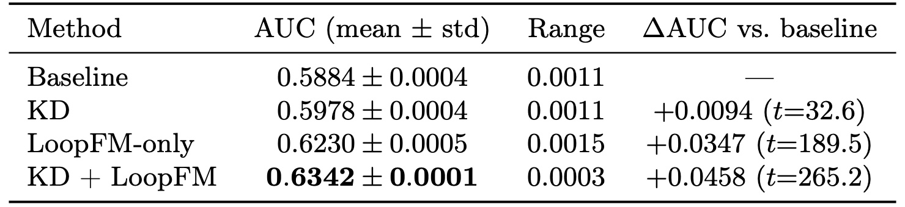
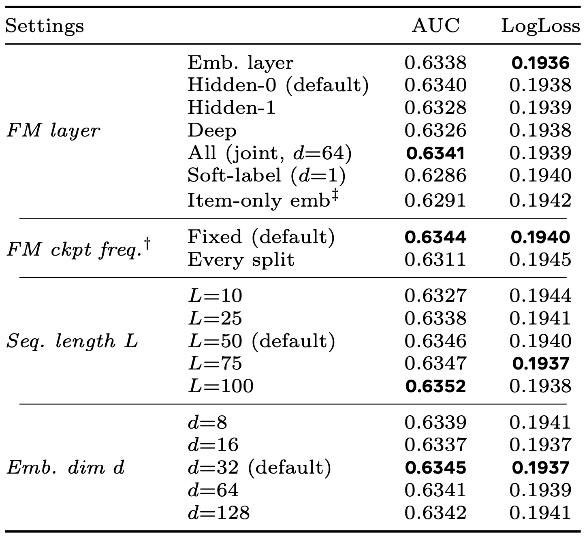
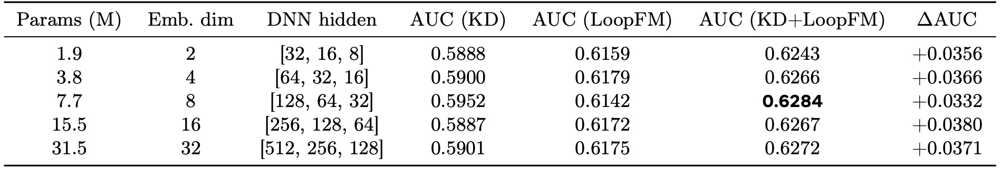
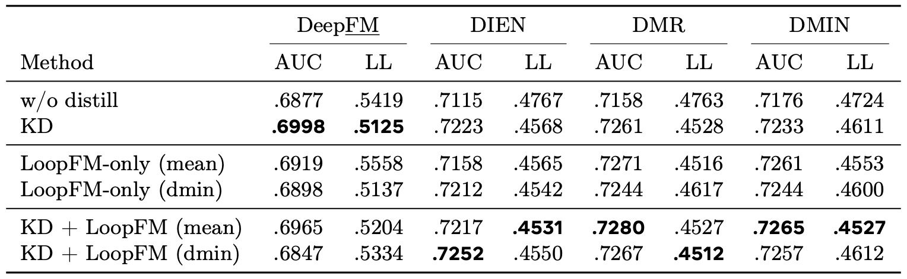
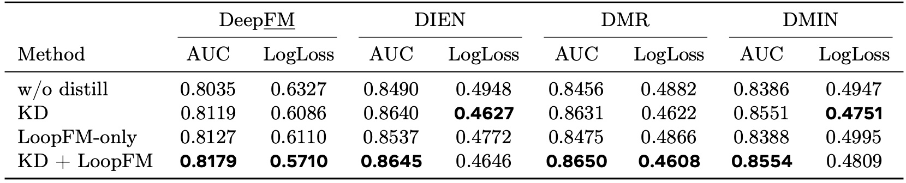

LoopFM：把基础模型的历史中间表征变成可服务的推荐特征
Meta 的 Shali Jiang、Hua Zheng、Boyang Liu 等 43 位作者在 LoopFM: Learning frOm HistOrical RePresentations of Foundation Model for Recommendation 中提出一种面向工业推荐的异步知识迁移框架：不让线上小模型只模仿基础模型的一个预测分数，而是把基础模型处理过的历史交互中间表征压缩、物化并组织成序列，再作为小模型的输入特征。论文 v2 于 2026 年 6 月 2 日提交，作者单位统一标注为 AI at Meta；截至本次核验，未发现独立公开的代码或项目页。本文以 v2 为准，既解释其工程链路与互信息推导，也区分公开基准、内部文字结论和仍无法复核的外推。
传统知识蒸馏只把超大基础推荐模型的一次标量预测交给小型垂直模型；随着 FM 获得更多跨域特征和更深交互能力，单一分数承载不了这些中间知识，VM 能接住的 FM 改进比例反而持续下降。
1. 背景和问题
1.1 工业推荐里的“大模型离线、小模型在线”
论文把工业推荐系统抽象成两层。基础模型 FM 聚合跨域样本和大量特征，参数可以达到万亿级，负责在离线环境中学习用户、物品、上下文与多任务之间的复杂关系；垂直模型 VM 只服务某个具体场景或排序阶段，参数通常是百万级，必须满足严格的吞吐和尾延迟。两者之间常用 external knowledge distillation：FM 离线为样本产生 soft label，VM 在真实标签之外再拟合这个标量。这个设计十分干净，因为线上不需要调用 FM，FM 与 VM 也不必同构。
问题在于，teacher 的最终预测只是一个数。它把几百到几千个跨域特征、不同深度的交互模式、用户上下文和多任务共享信息全部压到一个 logit 或概率里。论文用转移率衡量信息传递效率：若新 FM 相对旧 FM 的 normalized entropy 改进为 $\Delta \mathrm{NE}_{\mathrm{FM}}$，VM 通过蒸馏获得的改进为 $\Delta \mathrm{NE}_{\mathrm{VM}}$，则 $\mathrm{TR}=\Delta \mathrm{NE}_{\mathrm{VM}}/\Delta \mathrm{NE}_{\mathrm{FM}}$。作者观察到 FM 越大、与 VM 的特征和容量差距越大，标量 KD 的 TR 越容易下降。这里的关键不是 KD 完全失效，而是 FM 新学到的能力增长快于一个标量通道可传递的能力。
LoopFM 的切入点因而是“提高传输带宽”，而不是再设计一个更复杂的标量蒸馏损失。FM 为历史曝光或交互产生 soft label 时，本来就完成了一次前向计算；中间层向量包含比最终分数更丰富的状态。如果把这些状态当成可长期复用的数据资产，VM 就能看到“过去每次交互在 FM 眼中是什么”，而不只是看到 raw ID 或 teacher 当时给出的一个分数。这个思路把知识迁移从训练期的 loss coupling 变成训练与服务都能消费的 feature channel。
1.2 它与序列建模、表示蒸馏和缓存方案的区别
传统序列推荐如 DIN、DIEN、SASRec、BERT4Rec 或 SIM，通常对点击物品、类目、行为类型等原始信号建模。LoopFM 的序列元素不是 raw item ID，而是 FM 已经融合过当次用户、物品、上下文乃至跨域特征的交互表征。因此，同一物品出现在不同用户和情境下可以对应不同向量；它保存的是 interaction-level state，而不是单一 entity embedding。PinSage 类 item embedding 或统一 user embedding 则更像实体级摘要，难以保留每次交互内部的条件差异。
表示蒸馏也不等于 LoopFM。FitNets 匹配当前样本的隐藏层，CRD 最大化 teacher/student 表示的互信息，privileged-feature distillation 在训练时用 VM 线上不可见的特征监督学生。这些方法把中间表征作为辅助 loss 的目标，或要求处理当前请求的 teacher 表征；LoopFM 则把历史表征直接变成 VM 的输入。当前样本被明确排除，所以线上请求到来时只查询已经物化的历史，不需要实时 FM。它更接近异步缓存，但缓存的不是当前序列模型最终状态，而是一串可由下游重新聚合的历史 FM 状态。
论文也没有回避新颖性边界：作者明确承认并行独立工作 IAT 提出过相似的“压缩历史交互表征并组成序列”流程。LoopFM 声称的差异主要是把它提升为通用的 FM-to-VM 知识迁移框架，给出增益分解和转移率分析，并展示 Meta 生产系统中的多版本落地。换言之，压缩加序列化并非凭空出现的新动作；更值得评估的是三段式接口是否足够解耦、表征是否真比 raw history 多带来跨特征信息、以及大规模上线证据是否支持其转移率叙事。
1.3 论文真正要回答的四个问题
第一，FM 的历史中间向量能否在不改线上 FM/VM 耦合方式的前提下变成稳定特征；第二，收益究竟来自普通用户历史、FM 的额外跨域特征，还是压缩与聚合器本身；第三，随着 FM 特征变多、参数增大，LoopFM 能接住的能力比例是否有理论上的单调性；第四，存储、量化、checkpoint 更新和序列编码成本是否允许它进入真实广告系统。论文相应给出 extraction、compression、structuring 三个模块，一个基于条件互信息的精确分解，以及 TaobaoAd、KuaiVideo、Amazon Electronics 和内部系统证据。
正确的阅读边界同样重要。公开实验的 FM 是约数百万参数的 DMIN，并非万亿参数模型；公开表格使用 FP32 表征，没有验证 INT4。内部部分报告转移率约翻倍和三次转化提升，却未给原始 TR、流量规模、实验周期、置信区间或延迟数据。理论中增益分解是信息论恒等式，但更强的转移率下界依赖 lazy-NTK、良性过拟合、额外特征持续有信息、压缩 pipeline 不退化和有限区间内分子为正等假设。因此本文会把“框架成立”“公开基准有效”“万亿规模上线有效”和“理论单调性普遍成立”拆开判断，避免让一个层面的证据替另一个层面背书。
2. 方法
2.1 标量通道之外：抽取历史 FM 中间表征
给定包含 $M$ 层的 FM，LoopFM 选择其中 $K$ 层，把样本 $i$ 在这些层的激活拼接成原始向量。若所选层维度分别为 $d_{l_1},\ldots,d_{l_K}$，抽取结果如下。这里选择多个中间层不是为了在线执行额外网络，而是为了让已经发生的离线前向同时暴露实体细节与交互语义；它决定了后续压缩器能看到的原始信息上限：
符号解释。 $\mathbf h_{l_k}^{(i)}$ 是第 $i$ 个历史交互在 FM 第 $l_k$ 层的激活，$\mathbf e^{(i)}$ 是待压缩的多层拼接表征，$D$ 在工业 FM 中可能达到 $10^5$ 至 $10^6$。浅层保留输入和实体细节，深层编码更复杂的交互，却也可能因信息瓶颈丢掉可迁移线索；因此选层要在“包含多少原始信息”和“已经学会多少交互”之间取平衡。抽取复用产生 KD soft label 的同一次离线 FM 前向，作者据此认为新增推理开销可以忽略，但写盘、压缩和历史索引成本并不会自动消失。

Figure 1 把两个通道画得很清楚：绿色上路仍是 FM prediction 到 VM prediction 的标量 KD；橙色下路从若干 FM 层抽取向量，经 autoencoder 与量化后按 user key 和时间排序，最后交给 VM 的 sequence architecture。图中第 4 步指向 VM 的是历史序列而非当前请求，这正是“不做实时 FM inference”的成立条件。右侧结果框只是作者对内部与公开实验的摘要，不应当和左侧架构图混成一项证据：架构说明可离线化，结果框则仍需回到各表格和内部披露口径核验。核心机制是把一次性 FM 计算变成可反复消费的异步特征资产；真正新增的线上成本来自序列查找和 VM 编码，而不是 FM 调用。
2.2 压缩、Matryoshka 前缀与量化
原始 $\mathbf e^{(i)}$ 无法按用户长期保存。论文用与 FM 同期训练的 autoencoder 把它降到 $d\ll D$，同时通过 stop-gradient 阻止重构损失反向修改 FM。这样 FM 仍只优化原有推荐目标，AE 负责适配已经形成的表征空间，避免为了可压缩性牺牲 teacher 自身效果：
符号解释。 $f_{\mathrm{enc}}$ 是部署前使用的压缩器，$f_{\mathrm{dec}}$ 只为训练重构目标服务，$\mathbf z^{(i)}\in\mathbb R^d$ 是最终被物化的向量。encoder 最后一层使用 $\tanh$，把每一维约束在 $[-1,1]$；论文给出的标量 INT4 规则为 $\mathbf z_{\mathrm{quant}}=\operatorname{round}(8\mathbf z).\operatorname{clamp}(-8,7)/8$。与 FP16 相比，4 bit 账面存储减少四倍，但均匀 INT4 在内部系统带来 $0.03\%\text{--}0.07\%$ NE gap，已超过作者所说的 $0.02\%$ 生产显著阈值；使用 16 个非均匀 K-means 中心后，gap 降到 $0.01\%\text{--}0.02\%$。这个量化结果没有在公开数据上复现，且论文没有披露实际 TB、网络带宽或反量化延迟，四倍只能先理解为数据类型压缩比。 为让同一份训练产物支持不同场景的容量预算，论文进一步使用 Matryoshka autoencoder，让 $\mathbf z$ 的任一目标前缀都尽量能重构原向量：
这里 $\mathcal D$ 是部署候选维度集合，$\mathbf z_{1:d'}$ 表示前 $d'$ 维。这样可以在不重训 FM 的情况下为某个 VM 选择较短前缀，但“重构 MSE 小”并不普遍等价于“对标签有用的信息损失小”；论文附录只有在条件线性高斯和协方差可同时对角化的近似下，才把 MSE 与互信息损失联系起来。PCA、随机投影或 learned codebook 都可替代 AE，说明框架把压缩器视为可插拔接口，而非方法唯一成立的算法。
2.3 按 key 结构化历史并接入 VM
压缩后，系统在保留窗口内按 key 聚合事件，再依据时间组织结构。论文实验只实现 user-keyed temporal sequence，即每个用户的 FM 表征流在离线侧被截断、排序并物化为一个定长上限的历史对象；当前请求本身不会被写入正在消费的序列：
符号解释。 $k$ 可以是 user、item 或其他语义 key，$L$ 是最大历史长度，$t_{\mathrm{cur}}$ 是当前服务时间；严格不等式保证每个元素都来自当前请求之前。示例配置是最近 30 天、最多 200 条，公开 TaobaoAd 主实验则使用 $L=50$。框架还允许 item-keyed 序列或带 FM embedding 的 user-item graph，但这些只出现在未来方向中，没有实验支持。按 key 分组带来的新责任包括迟到事件、时间排序、版本标识、过期回收、无历史用户回退和隐私保留周期，论文没有给端到端 SLA 或缺失值伪代码。
VM 用 mean、sum、DIN 或 DMIN attention 等 encoder 处理 $\mathbf S_u$，把聚合结果与其他 feature embedding 拼接后进入交互层。这里的 encoder 是 VM 自己的一部分，它决定了 lookup 之后的线上计算量；FM、AE decoder 与当前请求的 teacher forward 都不在服务路径。若保留标量 KD，训练目标为：
其中 $\hat y^F$ 和 $\hat y^V$ 分别是 FM、VM 的预测，$\lambda$ 控制标量通道。训练和服务阶段的 VM 都消费已经物化的 $\mathbf S_u$，差异只在训练时还能看到标签与 soft label；decoder 和 FM 均不在线。KD 告诉 VM“teacher 对当前样本打了多少分”，LoopFM 则告诉 VM“teacher 如何理解用户过去发生过的事情”，这解释了两者可能互补，也解释了 LoopFM 不是免费的：序列长度、lookup fan-out 和 encoder width 会直接进入 VM 延迟与内存预算。
2.4 信息增益分解与 pipeline 损失
理论先比较 population Bayes risk。当前 VM 特征记为 $\mathbf x_{\mathrm{VM}}^{(t)}$，VM 能自行构造的原始历史记为 $\mathbf H_u$，由第 $k$ 个 FM 产生的压缩序列记为 $\mathbf S_u^{(k)}$，标签为 $y$。在交叉熵下，最优风险可以写成条件熵；这一步暂时忽略有限样本、优化误差与 VM 容量，只是在可获得信息层面做账。Theorem 1 用互信息链式法则得到一个精确恒等式：
符号解释。 $\mathcal I_{\mathrm{temporal}}$ 是普通历史相对当前特征新增的可预测信息；$\mathcal I_{\mathrm{cross},k}$ 是已经给定 raw history 后，FM 额外特征经序列带来的信息；$\mathcal I_{\mathrm{residual},k}$ 是 $\mathbf S_u^{(k)}$ 没保住的历史信息。前两项是收益，最后一项是代价。等式的价值在于把“历史本身有用”和“FM 跨特征加工有用”拆开；它并没有说任意有限容量 VM 都能把这些信息学出来。Self-LoopFM 因为 teacher 与 VM 特征相同，cross 项为零，最多只能接住 temporal information。附录进一步把 raw FM embedding $\mathbf E_u^{(k)}$、AE 输出 $\mathbf Z_u^{(k)}$ 和量化序列 $\mathbf S_u^{(k)}$ 视为逐级收缩的信息链，给出：
三个量分别表示 FM 原始表示没有保留的信息、AE 压缩损失和量化损失；它们沿着同一条 Markov-style pipeline 逐项望远镜相消，因此能把端到端损失定位到表示、压缩或编码精度。定义 temporal loss fraction $\tau_k\ge 0$ 与 cross-channel loss fraction $\eta_k\in[0,1]$ 后，可得到 gain sandwich：
这里 $\tau_k$ 不保证小于 1，所以下界可以为负；$\eta_k$ 则刻画 cross-feature raw information 被整条 pipeline 丢掉的比例。这个分解给工程选择提供了方向：更好的 FM 表征、更大的 AE bottleneck、更细的量化可以减少 loss，但最后能否转成测试 AUC 仍取决于 VM 容量、样本量与优化。它是有用的 accounting framework，却不是“压缩越宽线上必然越好”的无条件保证。
2.5 转移率界、适用条件与失败边界
转移率分析比较旧 FM$_1$ 和新 FM$_2$。后者拥有更多特征 $m_2>m_1$、不少于旧模型的参数 $p_2\ge p_1$。问题不再只是“LoopFM 比 baseline 好多少”，而是“teacher 升级产生的增益有多少被新历史表征通道带给 VM”。为此，teacher 总改进被拆成 Bayes feature gain 与过参数化 excess-risk change：
为了推导显式下界，论文加入三组强条件：A1 假设 NTK/lazy-training 与 Bartlett 式 benign overfitting，使 excess risk 被 $\xi_k=m_k/n+n/(p_k-m_k)$ 的上下包络控制；A2 假设 FM$_2$ 新增的每一组当前和历史特征都提供有正下界的条件互信息；A3 假设新 pipeline 的 representation、AE、quantization cross loss 总和不比旧 pipeline 更差。再假设学生充分训练、$\Delta_{\mathrm{teacher}}>0$，并令 feature gap $\delta=m_2-m_1$，论文的核心下界写成：
符号解释。 $\underline{\kappa}_{\mathrm{gap}}^{\mathrm{hist}}$ 是每组新增历史特征的互信息下界，$\bar{\kappa}_{\mathrm{gap}}$ 控制当前特征带来的 teacher gain 上界，$\eta_1$ 与 $\tau_2$ 表示 pipeline 损失，$\xi_1,\xi_2$ 来自过参数化风险包络。论文据此声称下界随 $\delta$ 单调上升并趋于饱和；但证明还需要分子非负、分母导数为正、$p_2-m_1-\delta\gg\sqrt n$，且在讨论 $\delta\to\infty$ 时仍保持 $p_2\gg m_1+\delta$。A3 只能排除论文写出的某个充分负迁移条件，不能排除有限样本、坏优化或不匹配超参导致的所有负迁移。因此“特征差距越大，转移率必然越高”只能在这些条件内理解，不能直接当作生产 scaling law。 对序列长度，population mutual information 还给出一个更直接、但同样只属于信息层面的单调关系：
新增历史只会让 Bayes 可用信息不减，且总量被 $H(y)$ 限制，所以边际收益递减；然而附录明确承认 achieved risk 会因估计误差和模型容量存在最优 $L^\*$。这一区分解释了为什么 Table 5 的 AUC 在测试范围内随 $L$ 上升，而 LogLoss 最优点并不在最长序列，也提醒读者不要把信息论单调性误读为线上模型无限加长历史都更好。
3. 实验结果
3.1 数据、时间切分与评价口径
公开实验使用 TaobaoAd、KuaiVideo 和 Amazon Electronics，规模分别约为 2500 万条/22 个特征、1370 万条/9 个特征、300 万条/6 个特征。TaobaoAd 按八个自然日流式切分：DMIN FM 在第 1–4 天训练，第 5–8 天离线生成 soft label 与 embedding；VM 在第 5–7 天不打乱、单 epoch 训练，第 8 天测试，没有 validation 或 early stopping。Amazon 没有真实时间戳，论文按预先给出的顺序切成八段；KuaiVideo 的同等细节没有完整披露。主 FM 是 embedding dimension 32、MLP 为 $[512,256,128]$ 的 DMIN，AE bottleneck 为 32；Taobao 的 LoopFM 序列长 50，公开实验都使用 FP32。
指标为 AUC、LogLoss 或内部使用的 normalized entropy。AUC 衡量排序，LogLoss/NE 同时反映概率校准，因此 AUC 上升而 LogLoss 变差不能写成“全面改进”。Taobao 主表覆盖 FM、FmFM、DeepFM、DIEN、DMR、DMIN 六种 VM；KuaiVideo 和 Amazon 重点测试 DNN/序列架构。论文基于 FuxiCTR/BARS 组合实现，但缺少 optimizer、learning rate、batch size、完整 AE 结构和若干数据集切分细节，公开复现仍需要自行补齐关键超参。
3.2 TaobaoAd：主增益、对照与统计强度
Table 1 是论文最强的公开主结果。以 DeepFM 为例，baseline AUC 为 0.5886，KD 为 0.5980，LoopFM-only 为 0.6245，KD+LoopFM 为 0.6344；DMIN 作为与 FM 同构的 VM 时，KD 为 0.6002，combined 仍到 0.6346。这说明历史表示通道并非简单重复标量 teacher score。六个 VM 上 LoopFM 的 AUC 都明显提高，但 LogLoss 并非同样一致：例如 FmFM 的 LoopFM-only AUC 从 0.5833 升到 0.6066，LogLoss 却从 0.1977 恶化到 0.2020，必须把 ranking gain 与 calibration cost 分开。

Table 1 中 headline “TaobaoAd 平均 +6.4%”大致来自四个 DNN VM 上 LoopFM-only 相对无蒸馏 baseline 的相对 AUC 增幅，并不是所有架构、所有指标或相对 KD 的统一提升。combined 在 FM、FmFM、DeepFM、DIEN、DMIN 上都给出本行最佳 AUC；DMR 的 LoopFM-only 0.6361 略高于 combined 0.6356，说明标量 KD 并不在每个配置上叠加。工程上更可信的结论是两条通道在多数 Taobao 配置互补，而不是“加上 KD 必然更好”。同时，公开 FM 与 VM 共享同一数据和浅层 DMIN 架构，这仍是远小于生产特征差距的受控代理。
Table 2 把历史结构化表示与三种 embedding-transfer 对照放到同一 DeepFM/KD baseline 上。当前样本 embedding 作为特征得到 0.5985，FitNets-style representation loss 得到 0.5984，entity-only embedding 得到 0.5983，都只比 KD 的 0.5980 多 0.0003–0.0005；LoopFM 到 0.6344，绝对增量 0.0364、相对增量约 6.09%。当前 embedding baseline 还需要实时 FM，运营上并不公平，但它至少说明“拿一个当前向量”既昂贵又没有复制历史序列收益。

Table 2 支持的是历史 interaction representation 的组合价值，而不是单独证明每个组成部分都必要。Current-Emb-as-Feature 缺少历史，FitNets 把表示变成训练约束而不进入服务特征，Entity-Only 缺少 interaction context；三者一次改变多个因素。更严格的因果归因还要分别控制“是否历史”“是否输入特征”“是否带用户/上下文”和“是否需要实时 teacher”。尽管如此，0.0364 与 0.0003–0.0005 的量级差距足够大，配合后面的 raw-sequence 与 aggregation 消融，能形成一条相对完整的证据链。
论文只在 TaobaoAd/DeepFM 上做五个随机种子。baseline 为 $0.5884\pm0.0004$，KD 为 $0.5978\pm0.0004$，LoopFM-only 为 $0.6230\pm0.0005$，combined 为 $0.6342\pm0.0001$；相对 baseline 的 combined 增量为 $0.0458\pm0.0004$，配对 $t=265.2$、自由度 4、$p<0.001$。这是唯一给出重复运行和显著性检验的公开设置，不能自动覆盖 KuaiVideo、Amazon 或线上实验。

Table 9 的价值不只是 p 值很小，还在于 combined 的 range 只有 0.0003、标准差 0.0001，小于单一通道；在固定流式切分下，KD 与 LoopFM 的组合似乎降低了随机初始化波动。不过样本只有五个 seed，t 值受极小方差推动，而且所有运行共用同一个数据切分、同一 FM 产物和单 epoch protocol。它能确认该受控设置不是偶然 seed，却不能测量日期漂移、checkpoint 漂移或不同用户分布下的方差。对生产决策而言，还需要跨日重放、多个 FM 版本和在线置信区间，并把增量拆成“固定 teacher 产物的随机种子方差”和“表征版本变化造成的系统方差”，否则极窄的 seed range 容易被误读成系统长期稳定。
3.3 序列结构、原始历史与 VM 容量
Table 3 比较四种聚合器。KD baseline 是 0.5980；mean pooling 为 0.6118，DIN attention 为 0.6112，sum pooling 却达到 0.6300，DMIN attention 最好为 0.6344。最简单的 sum 已取得 DMIN 大部分收益，说明核心信号可能是历史 embedding 的累积强度与数量，而非必须依赖复杂的顺序注意力。DMIN 相对 sum 的 0.0044 AUC 仍有价值，但它同时增加 VM 参数、延迟和部署复杂度。

Table 3 还提示平均与求和的差异可能编码活跃度：mean 消掉了序列长度尺度，sum 保留用户在窗口内的累计事件量，而数据切分和序列截断会让这个量与活跃程度、曝光机会甚至 label prevalence 相关。论文没有提供对序列长度归一化或活跃度分桶的进一步消融，因此不能简单解释为“sum 更擅长时序”。DIN attention 甚至低于 mean，也说明一个在 raw ID sequence 上有效的聚合器未必适合 FM latent sequence。部署时应先建立 mean/sum 低成本下界，再为 attention 的增量单独核算延迟。
Table 4 用 raw user sequence 对照 FM-learned sequence，并把 VM 容量缩小 16 倍。大 VM 下 raw history AUC 为 0.6302、LoopFM 为 0.6319，差 0.0017；小 VM 下二者为 0.6186 和 0.6233，差增到 0.0047。把两者同时输入最好：大 VM 0.6362，小 VM 0.6305。LoopFM 在 raw history 之上的边际增量也从大 VM 的 0.0060 增到小 VM 的 0.0119，符合“teacher 已学好的表示帮助容量受限 student”这一解释。

Table 4 同时给出一个重要限定：当 VM 与 FM 容量接近、特征也相同，精心构造的四种广告 ID 历史已经能拿到绝大部分收益，LoopFM 并非不可替代。小 VM 中 LoopFM 的 AUC 优于 raw history，但 LogLoss 0.1955 反而差于 raw history 的 0.1950；combined 才同时取得 0.6305 AUC 与 0.1941 LogLoss。这意味着 FM embedding 更容易让小模型排序，却可能改变概率尺度。最现实的方案可能是 raw sequence、LoopFM 与 KD 的组合及再校准，而不是用一种特征完全替换另一种；上线评估也应同时报告不同容量 VM 的排序、校准和延迟，防止只用 AUC 把容量受限场景里的概率偏差藏起来。
3.4 层、checkpoint、长度、维度与 FM 容量
Table 5 把四个部署敏感变量放在一起。选层方面，embedding layer 为 0.6338，Hidden-0 为 0.6340，Deep 为 0.6326，所有层 joint compression 为 0.6341；soft-label 作为一维历史序列也有 0.6286，证明“teacher 预测的时间结构”本身有信息。item-only embedding 为 0.6291，附录 Table 11 进一步报告 KD+item-only 为 0.6291、KD+Hidden-0 为 0.6342；按相对 KD 的增量计算，item-only 覆盖完整 interaction embedding 增益的 86%。这只在浅层 Taobao DMIN 上成立，工业深层 FM 的更大差距是作者推测而非公开实证。

Table 5 最值得重视的是 checkpoint drift。固定 FM checkpoint 的 AUC 为 0.6344，每个 split 换新 checkpoint 反而降到 0.6311；固定版本的 centroid drift 约 $6\times10^{-6}$ 至 $1.7\times10^{-5}$，更新版本为 0.013–0.021，约大三数量级，附录还说配对 cosine similarity 三天内降到约 0.80。不同版本产生的向量落在漂移坐标系里，sequence encoder 无法把同一用户的历史当成一致语言。长度从 10 增到 100 时 AUC 由 0.6327 升到 0.6352，但 LogLoss 在 75 时最好；维度 8 到 128 的 AUC spread 仅 0.0008且非单调。新鲜度、坐标系一致性和 VM 吸收能力必须联合调节，不能只把 embedding 做得更新、更长或更宽。
Table 10 把 DMIN FM 从 1.9M 扩到 31.5M 参数。combined AUC 分别为 0.6243、0.6266、0.6284、0.6267、0.6272，相对 KD 的增量始终在 0.0332–0.0380，没有随容量单调变化。这支持“较小 FM 也能提供强历史表示，公开范围内参数量不是唯一驱动”的结论，却没有验证万亿 FM 的 scaling。更值得记录的是数值一致性：正文一处说 16 倍容量下 AUC spread 小于 0.001，Table 10 的实际最大减最小为 $0.6284-0.6243=0.0041$，附录 prose 也正确写成 0.0041。

Table 10 使“FM 越大，LoopFM 越受益”的简单故事站不住脚：容量变化同时改 embedding dimension 与 MLP 宽深，KD AUC 本身也从 0.5887 到 0.5952 不规则波动；combined 最好点出现在 7.7M，而不是 31.5M。论文理论解释的是新增特征和 pipeline loss，不等于纯参数增大必然提高 numerator。作者也承认公开容量实验可能不能代表万亿 FM。工程评估应把 feature-set upgrade、parameter scaling、representation version 和 compression quality 分开做 factorial test，并以表中可复算的 0.0041 为准，不重复正文的 “<0.001”。
3.5 跨数据集、量化与线上证据
KuaiVideo 的特征已包含行为和 64 维视觉序列，LoopFM 只收集 watched event，长度 100。Table 6 中 DMR 的 KD+mean AUC 0.7280 是最高值，相对 baseline 0.7158 约增 1.7%；但聚合器表现与 Taobao 相反，mean 经常优于 DMIN attention。最明显的负迁移出现在 DeepFM：baseline 0.6877，KD 0.6998，KD+mean 降到 0.6965，KD+DMIN 更降到 0.6847，甚至低于 baseline。作者认为预训练视觉 embedding 主导可能解释 attention 聚合不稳，并指出 DeepFM 本身不适合该序列设置；“KD 参数未重调”只用于解释 Table 7 的 no-sequence 对照。几种解释不能混写，但结果至少诚实暴露了 combined 并非总是安全。

Table 6 表明数据已有丰富序列时，LoopFM 的边际空间更小，attention 结构也不具跨域稳定性。更反直觉的是，DeepFM 带原有序列的 baseline 0.6877 低于 Table 7 去掉序列后的 0.7056，提示 BARS 配置、序列模块或特征处理本身可能不适配。Table 7 的 no-sequence DeepFM 中，baseline/KD/LoopFM-only/combined 分别为 0.7056/0.7071/0.7167/0.7146；LoopFM-only 相对 baseline 增约 1.6%，combined 又低于 LoopFM-only。该对照支持“VM 越缺历史，LoopFM 越有价值”，也同时暴露 KD 权重和序列模块需要按数据重调。
Amazon Electronics 只有六个特征且已有 item/category history。Table 8 中 combined 在四个 VM 上都是最高 AUC：DeepFM 0.8179、DIEN 0.8645、DMR 0.8650、DMIN 0.8554；但相对 KD 的增量可以小到 DIEN 的 0.0005、DMIN 的 0.0003。LogLoss 也出现反向：DIEN 从 KD 的 0.4627 变成 0.4646，DMIN 从 0.4751 变成 0.4809。作者首页所写 Amazon 平均约 +0.5% 主要是 LoopFM-only 相对无蒸馏 baseline 的相对 AUC，不等于 combined 相对 KD 的稳定业务增量。

Table 8 把论文结论限定得更准确：当原数据只有少量特征、VM 已有同类历史且 KD 很强，LoopFM 的 cross-feature channel 可传内容有限，更多像一个小幅排序补充。DMR 的 combined 相对 baseline AUC 增 2.29%，但其中大部分来自 KD；若生产目标依赖校准概率、出价或预估值，AUC 的微小提升未必抵消 LogLoss 退化。需要额外做 temperature scaling、分桶 calibration、业务 loss 与不同用户历史覆盖率评估，不能只按照最高 AUC 选择上线配置。
内部结果只以文字披露。作者称在多组万亿参数 FM、百万参数 VM、数十亿样本系统中，LoopFM 使 KD 的 transfer ratio 约翻倍；INT8 近乎无损，K-means INT4 将 NE gap 控制在 0.01%–0.02%，并把 FP16 存储降四倍。上线版本从单一 surface 的 v1，扩展到三个额外 surface 且采用 INT4 的 v2，再到使用最新 FM 的 v3；论文报告初次上线后的第一阶段转化 +0.50%，后续阶段两次独立上线分别 +1.03% 和 +1.22%。这些数值很有产品吸引力，但没有对照组绝对值、流量分配、各阶段周期、置信区间、p 值、p50/p99 延迟、存储规模或回滚指标，只能标为作者报告，不能当作公开可复现实验。
表示诊断提供一些机制线索：5 万条 32 维向量的 top-4/top-8 singular values 解释 28.0%/47.3% 方差，均值 L2 norm 为 $1.71\pm0.14$；soft label 预测 click 的 AUC 为 0.6136，各维与 soft label、真实标签的 Pearson correlation pattern 相关系数为 0.95。注意力分析覆盖 163,840 个样本，平均序列长 16.7：十分钟内历史权重约为 4–8 小时历史的三倍，同类目相对异类目为 1.13–1.16 倍，同品牌为 1.04–1.06 倍，已点击历史反而只有未点击的 0.84–0.97 倍。它说明 encoder 同时利用新近性、语义和负反馈，但 attention/correlation 仍不是因果解释，不能证明每个维度就是“feature importance”。
4. 总结
4.1 我的判断
LoopFM 最强的贡献不是创造一种前所未见的序列编码器，而是给工业推荐找到一条边界清楚的 FM 能力落地路径：复用离线 FM 计算，把历史中间状态变成异步特征，在 VM 侧自由选择聚合器，同时保留标量 KD。这个接口把 teacher 的跨域知识、用户历史和线上服务约束连到了一起。TaobaoAd/DeepFM 的五 seed 结果、历史表征对 current embedding/FitNets/entity-only 的量级优势，以及 raw history 与 LoopFM 的互补，是公开证据中最有说服力的部分。
结论也必须按数据条件收缩。LoopFM 在特征丰富、VM 容量受限、原 VM 缺少高质量序列时最有价值；在已有视觉/行为序列的 KuaiVideo 或特征贫乏但 KD 很强的 Amazon 上，增量变小、组合可能负迁移，AUC 与 LogLoss 还会分叉。精确的互信息恒等式帮助解释 temporal、cross-feature 和 compression 三类量，转移率单调性却依赖强假设。内部万亿规模、INT4、转化和成本结果值得跟进，但现有披露不足以独立审计。
4.2 工程启发与复现建议
如果在真实系统中复现，我会按同一条可回滚链路推进：
- 先用固定 FM checkpoint 离线抽取一个短窗口，分别建立 KD、raw history、mean/sum LoopFM 和 attention LoopFM 四类增量，避免一开始把压缩、序列和复杂 encoder 同时上线。
- 对每条 embedding 写入 FM version、layer set、encoder version、quantizer version、event time 与 retention policy；同一用户序列默认只混用可对齐的坐标系，升级时先做 anchored training、linear projection 或 EMA checkpoint 对齐实验。
- 同时报告 AUC、LogLoss/NE、分桶 calibration、history coverage、冷启动比例、lookup miss、特征新鲜度、存储量、网络流量和 p50/p99 延迟；转移率 numerator 与 denominator 必须使用同一时间窗和风险口径。
- 量化按 FP16、INT8、uniform INT4、learned INT4 逐级验收，公开数据先验证排序与校准，再把内部 significance threshold 写进发布 gate；不要只凭四倍 bit-width 算术估算整体成本。
- 在线先从单一 surface 和低风险 VM 开始，以原 VM/KD 为即时回退；对高活跃、短历史、长历史、跨域特征覆盖和 checkpoint age 分桶，验证收益是否真随 feature gap 增大。
4.3 局限与后续跟进
目前至少有六个限制。其一，公开 FM 约数百万参数，不能直接验证万亿规模叙事；其二，公开实验不含量化，内部 INT4 无原始表；其三，存储、lookup、序列 encoder 延迟和冷启动没有量化；其四，理论忽略有限样本、优化和 VM 容量，且 population risk 与实证 NE transfer ratio 未被显式桥接；其五，A1–A3 与额外 positivity/asymptotic 条件很强，不能排除一般负迁移；其六，Table 10 的 0.0041 与正文 “<0.001” 不一致，说明关键摘要数值仍需复算。除此之外，作者承认并行的 IAT 共享高层 compress-and-sequence 思路，方法新颖性应聚焦接口、理论和规模验证。
后续最值得做三组实验。第一，公开一个可重复的 multi-domain FM/VM benchmark，分别控制新增特征、teacher 参数量、VM 容量与 history richness，验证 cross-feature term 是否真的随 feature gap 增长。第二，建立 checkpoint-aligned embedding protocol，比较 anchored、projection、EMA 与 version-specific encoder，画出 freshness gain 和 coordinate drift 的交叉点。第三，把 user sequence 扩展到 item-keyed history、跨域 transfer 和 edge-embedding graph，同时公布覆盖率、隐私窗口、存储/延迟曲线与线上区间。若这些结果成立，LoopFM 才会从一条可信的 Meta 工业方案进一步成为可迁移、可审计的推荐基础模型接口。